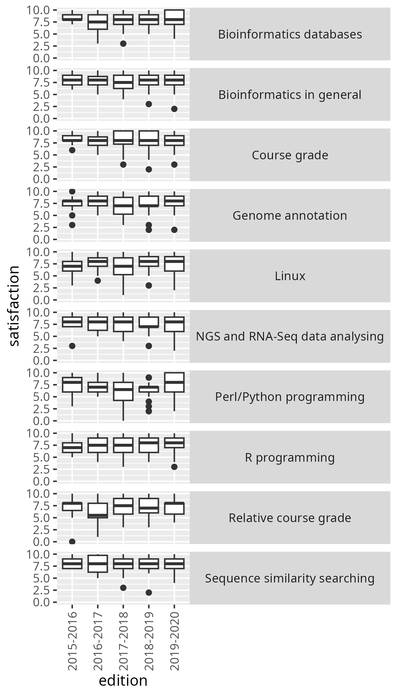
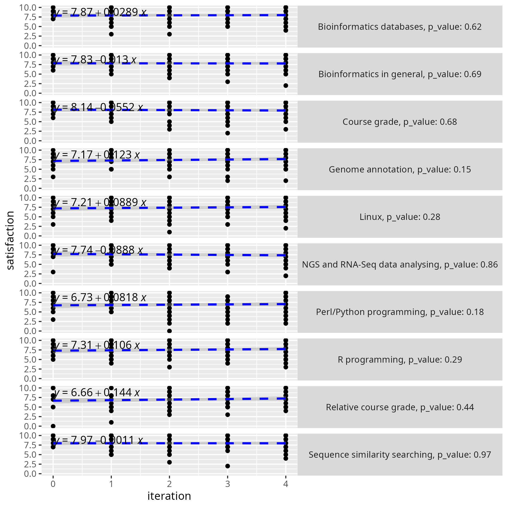

2025-05-25¶
- Date: 2025-05-25
- Lead discussion: Elin Kronander
- Paper: Andrés Garzón et al.
E-learning strategies from a bioinformatics postgraduate programme
to improve student engagement and completion rate,
Bioinformatics Advances (2022)
https://doi.org/10.1093/bioadv/vbac031
Notes¶
Questions¶
-
Q: What grade on a scale from 1 (worst) to 10 (best) would you give this paper?
4.0, as I do enjoy the ambitions of the authors, but they only deliver parts of the data and oversell the results.
-
Q: How would you praise the paper?
It seems to be written by teachers that seem ambitious, strive to follow evidence-based best practices and know part of the literature.
-
Q: How would you criticise the paper?
-
The title is false: 'E-learning strategies from a bioinformatics postgraduate programme to improve student engagement' should be called 'A bioinformatics postgraduate programme that has reduced its dropout rate'
- The data and code are only supplied partially
- No statistics, but do explain results on eyeballing and wishful thinking
- They could have read that there is no relation
between teaching ratings and student learning
[Uttl et al., 2017]. -
They write 'we show' without showing it at all
-
Q: How would you summarize the paper in one line?
Ambitious teachers overselling a course that has reduced its dropout rate for an unknown reason.
- Q: How would you explain the reduced dropout rate?
It is not an increase in course satisfaction, as there is none.
They state that:
We showed that the differentiation of teaching roles, including mentors that monitor small groups and provide rapid-response support to students, can make a major contribution to improving the performance of individ- ual learners. The intended outcome of this mentoring strategy is to reduce the impact of any negative critical incidents on the students’ perception, which has been pointed as a major factor in student dropout (Lin, 2011)
However, they do not show it. Figure 4b, panel 4.1 'The importance of the tutor's contribution' shows:
- no clear increase at all
- is from the teacher's perspective: the students have never been asked.
- the data is absent to check
- there is no statistics.
- few teachers filling in the survey
I do assume the literature is right, they just don't show it.
- Q: How would this paper make us a better teacher?
(putting in bigger context, as recommended by
[Deenadayalan et al., 2008])
This paper taught me:
- How it looks like when authors struggle to get their paper published
- A paper to read, that may show that negative critical incidents are a major factor in student dropout (Lin, 2011)
Course history¶
- The course still exists at the course site
- Costs nowadays: 855 euros per year. However,
there are also these costs (from
the course site, section 'Pagos'):
- Reservation fee: 128.25 euros
- Registration fee (once admission is notified and before the program begins): 363.38 euros
- First installment payment (January 2026): 363.37 euros
My opinion¶
- They claim they share all data, but they do not
- They do not share their analysis code
- Figure 2c, showing dropout and yield rate is the most promising result. However, its last year shaped by the corona pandemic. Ignoring the last value still shows a promising trend.
- There is no data to statistically show that the course grades have improved
- There is no evidence that satisfaction has changed in any way
They measure the course satisfaction of the learners.
We know from meta-analyses that there is no relation
between teaching ratings and student learning [Uttl et al., 2017].
I wonder how they explain the change (if any) of the values?
Why do they keep track of countries and regions?
suppl6.xlsx shows that there are 127 learners
over 5 years = ~25 learners per year
(more than 30 students on average; see Fig. 3a for details)
From suppl5.xlsx:
| Year | Number of registrations |
|---|---|
| 2015-2016 | 59 |
| 2016-2017 | 53 |
| 2017-2018 | 60 |
| 2018-2019 | 62 |
| 2019-2020 | 78 |
From suppl6.xlsx:
| Year | Number of evaluations | Percentage evaluations per registration |
|---|---|---|
| 2015-2016 | 16 | 16/59=27% |
| 2016-2017 | 18 | 18/53=34% |
| 2017-2018 | 22 | 22/60=37% |
| 2018-2019 | 33 | 33/62=53% |
| 2019-2020 | 37 | 37/78=47% |
Grades¶
I think this is what it is about.
| Starting year | Average grade |
|---|---|
| 2015 | 7.4 |
| 2016 | 7.6 |
| 2017 | ? |
| 2018 | 8.1 |
| 2019 | 7.95 |
In figure 2d, what was the average final grade for the green/2017-2018 cohort?
From figure 2e, I see no reason to believe that the average grade has changed. I cannot check, as this data has not been published.
Why not publish the grades?
The data is incomplete.
The results for subjects related to programming languages, two of the most challenging subjects for students with a scientific profile, present a generally upward trend (Fig. 3b).
Well:
- There is not much data to work on
- By eyeballing, in PRG, 1.2 and 1.3 have an upward trend. For R, this trend is not as clear
- For other subjects, there is no trend at all
- The data uses a scale from 1-10, where this is plotted from 1-5. Why?
Fig 4a, section 4.3: student course satisfaction¶
In section '4.3 Students' and teachers' overall course satisfaction help to progressively improve the programme': the problem with this title is that there is no change in any satisfaction over the years, except when I combine the satisfactions of the courses:
| course | p_value | is_changing |
|---|---|---|
| Course grade | 0.684 | FALSE |
| Relative course grade | 0.438 | FALSE |
| Sequence similarity searching | 0.974 | FALSE |
| Bioinformatics databases | 0.615 | FALSE |
| Linux | 0.277 | FALSE |
| R programming | 0.289 | FALSE |
| Perl/Python programming | 0.176 | FALSE |
| NGS and RNA-Seq data analysing | 0.857 | FALSE |
| Genome annotation | 0.154 | FALSE |
| Bioinformatics in general | 0.688 | FALSE |
| Courses combined | 0.036 | TRUE |
This means that this statement is nonsense:
the scores show a positive trend over the successive course editions, which could be related to both the faculty’s accumulated experience, and the students’ higher profiles.


Also, note the survivorship bias here:
The average mark given by the students for the course as a whole has always been above 8 out of 10 and is currently close to 9.
As quoted by others¶
From [Wolff, Katharina, et al. "Data literacy in genome research." Journal of Integrative Bioinformatics 20.4 (2024): 20230033]:
- Previous publications also reported success with transdisciplinary approaches used for diverse cohorts [xx, xx] and the particular importance of a practical methodology and problem-based learning approaches [25].
This paper did not prove the particular importance of a practical methodology and problem-based learning approaches...?
From [Minga Vallejo, Ruth Elizabeth. "Construcción social de aprendizajes a través de MOOCS para la sustentabilidad energética como espacios para la innovación abierta y colaborativa." (2024)]:
26 used a quantitative method, such as [x], [x], [x]. 10 used a mixed method, such as [x], [x], [69]
Ah, they used a mixed method ...?
The second and last mention of the same study:
Of the 70 articles identified in Scopus and Wos, 50 used the qualitative method, some examples are articles with identification numbers [x], [x], [x]; 25 of these articles used a phenomenological design, some examples are studies [x], [x], [69]
I assume this a mistranslation: using a 'phenomenological design' is new to me ...?
Misc¶
In addition, students’ perceptions must be considered with caution (Islam, 2013). It was shown, for example, that both teachers and students resisted active teaching strategies and preferred traditional methods, despite better results in acquired competencies (Deslauriers et al., 2019).
Fun!
References¶
[Uttl et al., 2017]Uttl, Bob, Carmela A. White, and Daniela Wong Gonzalez. "Meta-analysis of faculty's teaching effectiveness: Student evaluation of teaching ratings and student learning are not related." Studies in Educational Evaluation 54 (2017): 22-42.